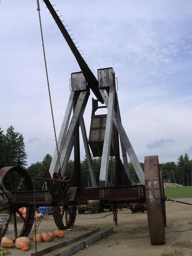
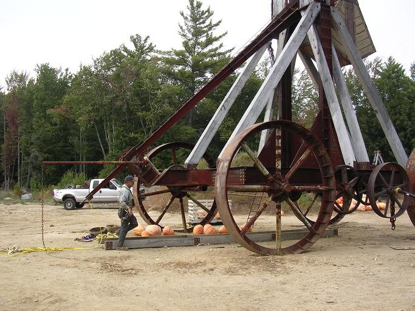
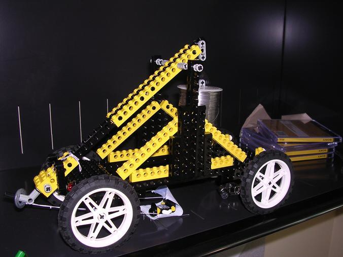

Tossing Pumpkins - Medieval style
What is over 50 feet tall, weighs about 20 tons and can throw a 50 lb pumpkin 1000 feet? It's a trebuchet of course. This trebuchet was built by a Yankee Farmer as a hobby. During the fall (when there is a ready supply of ammunition), he fires off two shots an hour at the castle up on the hill. Oh, did I mention he has a castle? What else would you aim a trebuchet at! The shot is quite amazing, the pumpkin is in the air for eight seconds. At its peak of over 500 feet you can barely see the pumpkin.
There's no charge to watch the shot, and last Saturday when I arrived with the kids there were probably 25 spectators hanging out. Of course the half-hour between shots gives you plenty of time to check out the farm stand and purchase some pumpkins or apples.
Here's a picture of the trebuchet as it is being loaded 
And one more just as they prepare to load the pumpkin.

Willie was the one who clued me in on this. Willie was so inspired that he decided to dig into our Lego collection
and build his own trebuchet. Just on a smaller scale. This instrument
of warfare works just as well as its big brother. It can throw the
little lego man about 15 feet.

Ah ... the power of legos (and pumpkins).
Posted by Alexander Koller on September 30, 2004 at 01:53 AM EDT #
Posted by Paul on September 30, 2004 at 05:05 AM EDT #
Posted by Willie Walker on September 30, 2004 at 12:26 PM EDT #